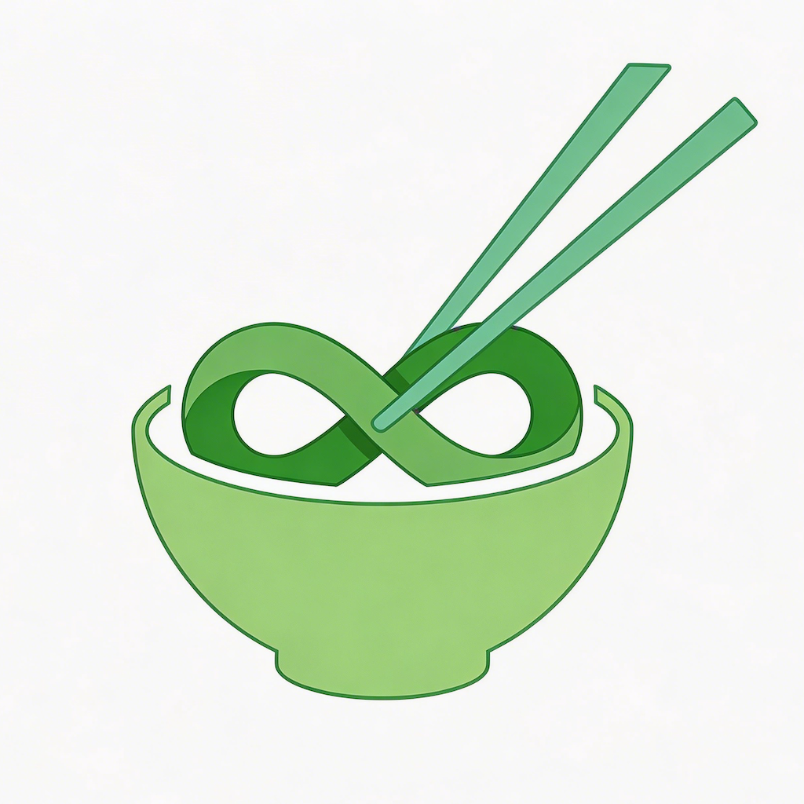
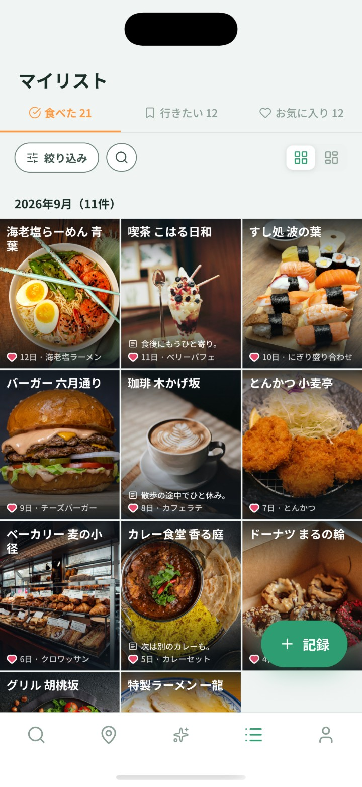
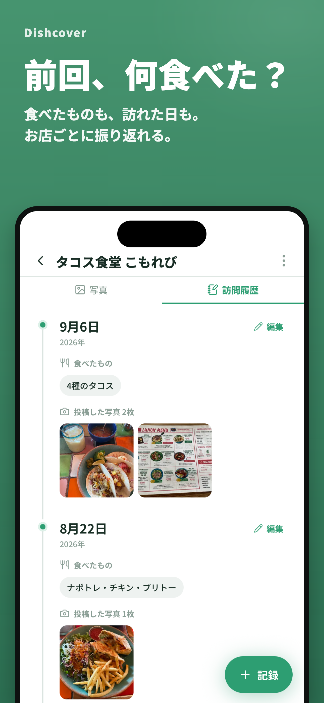
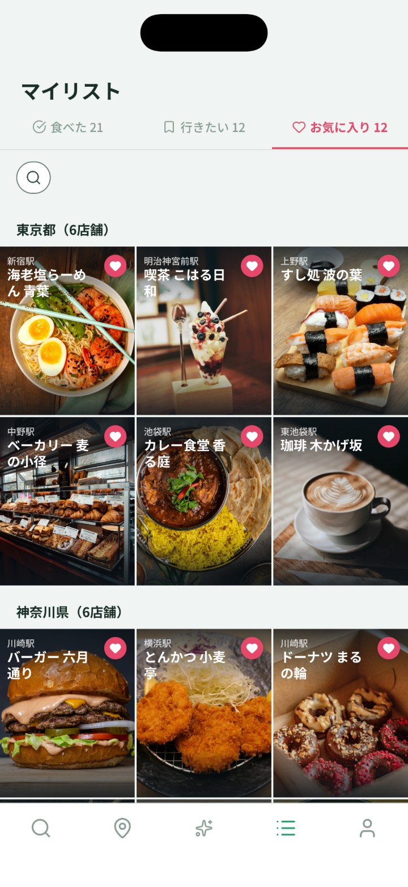
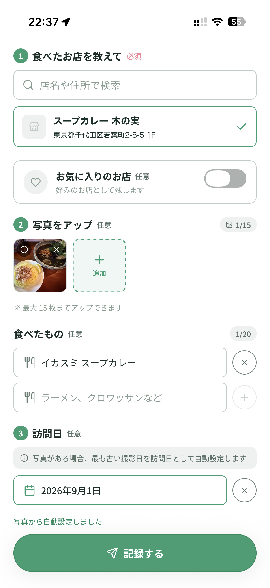

食べたお店が、写真で並ぶ。あの日の一皿も、すぐに見返せます。

食べたものも、訪れた日も。お店ごとに振り返れます。
「前に食べた、あのメニューは何だっけ？」同じお店の記録が訪問日ごとに並ぶから、写真や料理名を見ながら思い出せます。


食べて気に入ったお店は「お気に入り」へ。すぐに好きなお店を見返せます。
自分のために残そう。採点・口コミ不要。食べたお店を選んで、残したいことだけ記録できます。

採点・口コミ不要。食べたお店やメニューを残して、いつでも見返そう。